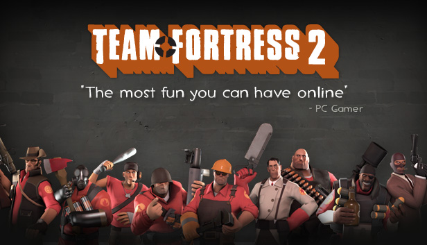

Team Fortress 2

Team Fortress 2 is a multiplayer first-person shooter game developed and published by Valve Corporation.
It is the sequel to the 1996 Team Fortress mod for Quake and its 1999 remake, Team Fortress Classic.
The game was released in October 2007 as part of The Orange Box for Windows and the Xbox 360, and ported to the PlayStation 3 in December 2007.
It was released as a standalone game for Windows in April 2008, and updated to support Mac OS X in June 2010 and Linux in February 2013.
It is distributed online through Valve's digital retailer Steam, with Electronic Arts managing retail and console editions.
Players join one of two teams, RED and BLU, and choose one of nine character classes to play as in game modes such as capture the flag and king of the hill.
Development was led by John Cook and Robin Walker, the developers of the original Team Fortress mod.
Team Fortress 2 was announced in 1998 under the name Team Fortress 2: Brotherhood of Arms. Initially, the game had more realistic, militaristic visuals and gameplay, but this changed over the protracted nine years of development.
After Valve released no information for six years, Team Fortress 2 regularly featured in Wired News' annual vaporware list among other ignominies.
The finished Team Fortress 2 has cartoon-like visuals influenced by the art of J. C. Leyendecker, Dean Cornwell, and Norman Rockwell, and uses Valve's Source game engine.
Team Fortress 2 has received critical acclaim for its art direction, gameplay, humor, and use of character in a wholly multiplayer game.
Since its release, it has been widely recognized as one of the greatest video games ever made.
Valve continues to release new content on a seasonal basis in the form of submissions made through the Steam Workshop.
In June 2011, the game became free-to-play, supported by microtransactions for in-game cosmetics. A 'drop system' was also added and refined, allowing free-to-play users to periodically receive in-game equipment and items.
Though the game has had an unofficial competitive scene since its release, both support for official competitive play through ranked matchmaking and an overhauled casual experience were added in July 2016.
For more information